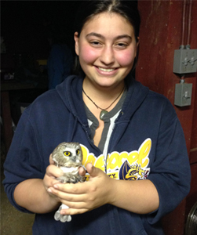

About Me
I am a Ph.D.B.S/M.S. student pursuing a degree in Environmental Science with a concentration in Ecology and Conservation at Drexel University. While environmental science can be a broad topic, I have personalized my experience towards studying wildlife biology through both classes and extensive research experiences. Through a combination of work in the field and the lab, I am currently working towards my masters thesis on birds and Lyme Disease. I love working outside and getting my hands dirty, while making sure to share this love of nature with others. I have had some training in digital media and photography, and I have used both of these skills to spread knowledge through many means including developing and launching two Drexel lab webpages. After my graduation in June 2018, I plan to pursue a Ph.D. working with birds.